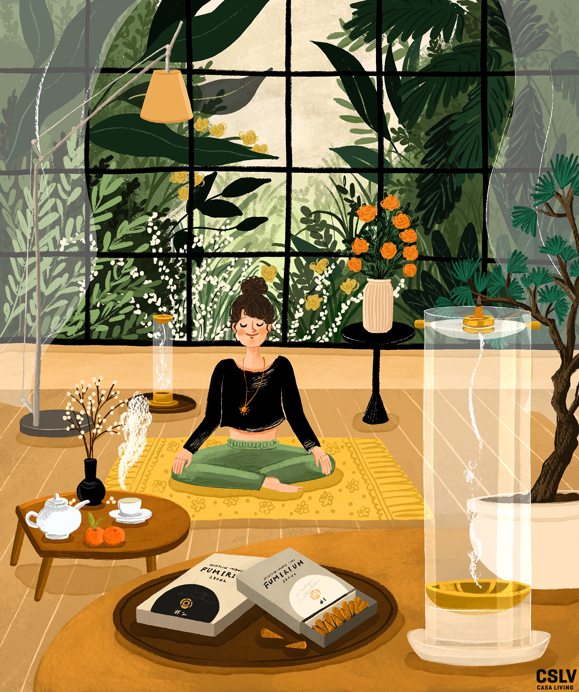
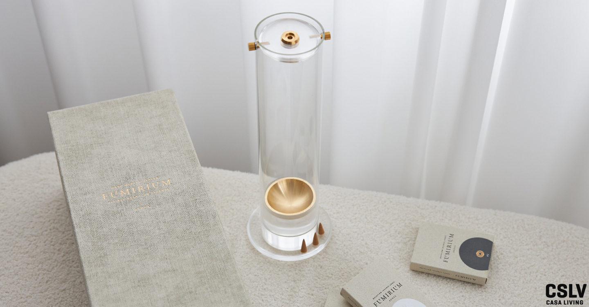
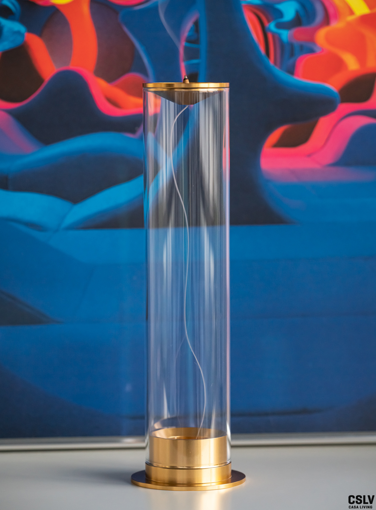
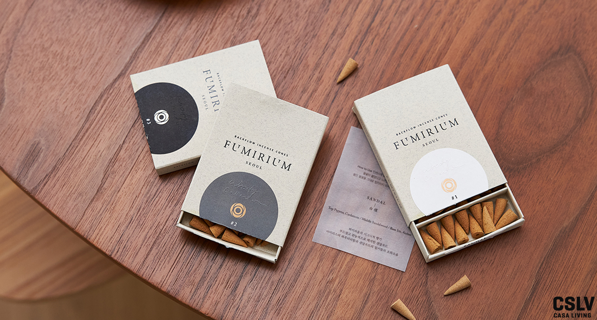
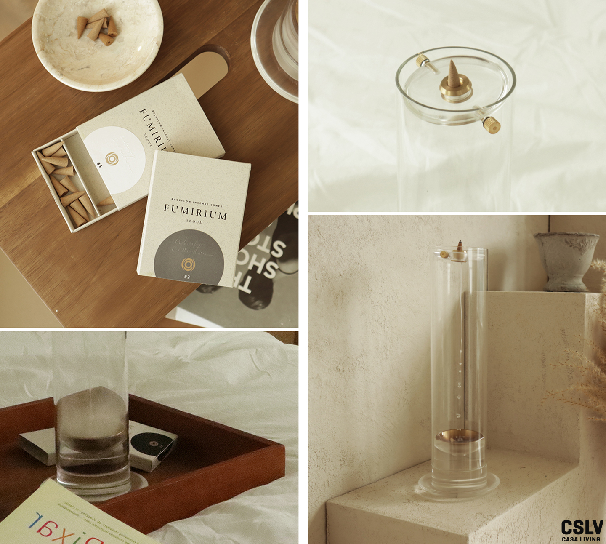

2022.01.25 | ♡ 0
-
퍼미리움, 현재를 수용하는 태도
인센스를 태우고 재를 치우는 그 모든 과정이 지금을 있는 그대로 받아들이는 태도의 시작일지도 모른다.
#아이템 #용품 -
BRAND ESSAY
하나의 브랜드를 깊게 알고 있는 이들의 이야기를 CSLV스토어 브랜드 에세이 코너에서 만나보세요.
-
퍼미리움, 현재를 수용하는 태도
곧잘 산만해지던 여러 날, 우아한 속도로 내려오는 인센스 연기의 몽환적인 연출을 넋 놓고 바라보는 나를 발견했다.
오랜만에 느끼는 순도 높은 몰입이 끊임없는 생각으로 가득한 머릿속을 환기했고, 나와 비슷한 상황을 겪는 누군가와 이 순간을 공유하길 바랐다. -

일러스트_김민하(드로잉프레리)
-
브랜드 디렉터의 속도
여러 브랜드와 서비스가 쏟아져 나오는 지금, 나는 일방적인 메시지의 피로함에서 벗어나 개개인의 상대성을 존중하고 그들이 가진 다양한 배경에 메시지를 투영하는 브랜드 커뮤니케이션을 선호한다. 자신의 내면을 들여다볼 수 있게 돕는 반사체, 즉 리플렉터(Reflector)의 역할을 해주는 브랜드에 대해 고민한 게 그 시작이다.
라이프스타일 프로덕트 스튜디오인 NUBON에서 브랜드 디렉터로서 제품 기획 및 개발팀을 이끌고 있는데, 퍼미리움은 우리 팀이 세상에 소개한 첫 번째 브랜드다. 향 인테리어를 의미하는 센테리어(Scent+Interior) 라인업의 대표작이 하향 연무를 감상할 수 있는 백플로우 인센스와 인센스 퍼포머라는 인센스 버너다. 현재 봄·여름 인센스 컬렉션, 퍼미리움 인센스와 또 다른 매력의 비 연무형 센테리어 아이템을 진행하고 있다. 또한 직접 만져보고 경험해볼 수 있도록 퍼미리움 쇼룸과 플래그십 스토어 또한 오픈을 준비 중이다. 바쁜 나날인 만큼 나를 돌보는 시간도 보다 확실히 챙기려 한다. -
리추얼이 있는 하루
요즘은 루틴을 개발하고 발전시키는 것에 관심이 많다. 최적의 컨디션과 감각에 도달하는 가장 빠른 지름길이어서다. 하지만 의미가 퇴색된 반복은 스트레스의 좋은 먹이여서 루틴에서 한 단계 나아가 여기에 의미를 부여한 리추얼을 만들고 있다. 예를 들면 퇴근 후 운동하러 가는 길에 가끔 좋아하는 장소에서 조깅하며 들었던 음악을 듣곤 한다. 그러면 내가 해야 할 일인 운동을 왜 하는지, 어떻게 해야 하는지에 대해 반복해 생각하게 된다. 리추얼의 역할은 나에게 최적화된 무언가로 빚어내는 것이다.
신체적·정신적·사회적 건강이 조화를 이루는 이상적인 상태를 일컫는 웰니스는 인류가 삶을 영위하는 핵심적인 가치가 아닐까 싶다. 우리 모두의 삶의 가치이자 목표일지도. 나는 회복을 위한 웰니스 아이템을 고를 때 유무형의 것인지 상관없이 지속가능한지, 아날로그인지를 우선 고려한다. 특히 아날로그를 선호하는 까닭은 지속가능성과도 연결된다. 디지털은 전기가 없으면 사용할 수 없다는 한계 때문. 그래서 언제 어디서든 나의 의지와 힘만으로 충분히 사용 가능한 아이템을 고른다. -

퍼미리움 인센스 퍼포머는 상단의 황동 손잡이를 돌려 재를 손쉽게 털어낼 수 있다. 가격 32만원.
-
하향 연무가 선사하는 몰입
한 가지에 집중하면 누가 업어가도 모르는 성향이라 평소 일상이 권태롭게 느껴졌던 적은 없었다. 그러던 언젠가 책을 읽어도 영화를 봐도 곧잘 산만해지는 게 반복되다 보니 ‘이건 뭔가 문제가 있는걸’ 하고 느꼈다. 그러다 우연히 접한 하향 연무 방식의 인센스는 놀라움을 안겼다. 인센스는 보통 위로 연무가 올라가는데 하향 연무는 물이 흐르듯 우아한 속도로 내려오는 모습이 몽환적이었고, 넋 놓고 계속 바라보는 나를 발견하게 되었다. 그 당시 오랜만에 만나는 순도 높은 몰입이 주는 경험이 꽤 신선했다. 나와 비슷한 어려움을 겪는 이에게 같은 경험을 선사하고자 제품 구상에 들어갔다.
그 과정은 결코 녹록지 않았다. 인센스 시장 내에서 아래로 연기가 흐르는 제품은 매우 적었고, 참고할 만한 타 브랜드의 사례도 거의 없어 인센스 제조 연구부터 자력으로 시작했기에 여러 시행착오를 겪었다. 어떤 순간에도 타협할 수 없었던 점은 좋은 원료를 사용하고 핸드메이드 가공을 고수한다는 원칙이다. 인센스를 통해 전하고자 하는 가치가 분명했기에 지킬 수 있는 부분이었다. 퍼미리움 퍼포머에 사용자가 백플로우 인센스 콘을 얹고 불을 붙인 후 약 10분간의 연무를 감상하는 시간이 끝나면 이후 재를 처리하는 과정까지를 하나의 내러티브로 두고 설계했다. 주의력 결핍이 화두가 되는 요즘, 우리에게 필요한 몰입의 순간을 만드는 힐러의 역할을 한다. -

스탠다드는 아담한 사이즈로 좁은 공간이나 침실 등에서 사용하면 좋다. 가격15만원
-
나무의 이름으로
자이올로지(나무학)를 연구하는 독일인 교수와 대담할 기회가 있었다. 그는 명상에 관심이 많아 인센스를 알아보다 검색을 거듭한 끝에 퍼미리움을 만나게 되었는데 나무 종류의 이름을 내건 인센스 제품은 처음 보았다고 반가워했다. 추후 수종 시리즈를 계속 전개할 의향이 있다면 나무에 대한 자문에 응해주겠다고 했는데, 그 약속이 지켜지면 좋겠다.
그가 호기심을 가진 퍼미리움의 백플로우 인센스는 백단, 침향, 설송으로 샌달(SANDAL)과 아가(AGAR), 시더(CEDAR) 총 3종이다. 특정 테마를 담은 컬렉션으로 각 에디션이 가진 향마다 고유의 스토리를 내포하고 있다. 나는 때와 장소에 맞춰 향을 즐기는데 퍼미리움의 시그너처 향인 샌달은 백단나무의 에센셜 오일의 밀키하고 포근한 나무 향취가 마치 엄마의 품속처럼 포근하게 감싸 안는 느낌을 주어서 퇴근 후 휴식을 위해 자주 사용한다. 이 외에 아가, 시더는 친구들이 집에 놀러와 조촐한 파티를 할 때 분위기 전환을 위해 사용한다. -

상황에 따라 골라 사용하는 백플로우 인센스 3종 각각 가격 1만9800원
-
‘시공간에 구애받지 않고 그곳이 어디든 간편하게, 코로 보고 눈으로 맡으며 휴식을 위한 몰입과 감성의 확장을 선사한다’가 퍼미리움이 전하고자 하는 바다. 마인드풀니스에 도달하기 위해 필요한 몰입력. 긴장을 풀고 이완의 상태를 가져오는 매개체가 되는 아이템 중 하나가 인센스가 아닐까. 인센스를 태우고 재를 치우는 그 모든 과정이 지금을 있는 그대로 받아들이는 태도의 시작일지도 모른다.
-
Brand Guide
퍼미리움에 대한 조언
-

-
독특한 관점의 퍼미리움 인센스 퍼포머
사용자가 직관적으로 인센스를 사용할 수 있게 설계한 퍼포머의 실린더는 투명한 유리 소재다. 독일 보로실리케이트 글라스를 채택해 국내 글라스 아티장의 블로잉 기법을 포함한 섬세한 공정을 거쳐 만든다. 투명한 재료의 속성을 담담하게 드러내어 연무라는 본질에 집중하도록 했다.
-
국내에서 생산한 백플로우 인센스
중력의 힘에 의해 밀도 높은 연기가 위에서 아래로 떨어지며 모래시계처럼 연무가 차근차근 쌓이는 퍼포먼스를 멍하니 즐길 수 있는 인센스다. 100% 국내 공정을 거친 샌달우드 분말 외에 인센스 반죽의 점도와 인센스의 발화를 위해 첨가한 유근피, 상백피 분말 또한 식용 가능한 천연 재료를 사용했다. KCL 인증을 마쳐 안전하다.
-
인센스 바로 사용하기
무엇보다 충분히 환기해야 한다. 또한 불을 붙여 사용하므로 세심한 주의가 필요한데 화기 근처, 취침 시에나 부재중에는 사용을 삼간다. 인센스는 리추얼 외에도 실용적인 목적으로도 활용할 수 있다. 향이 강한 음식을 요리했거나 사람들이 많이 머무는 공간, 청소하는 동안 창문을 열고 사용해보길 권한다. 인센스가 냄새 분자 또는 먼지와 함께 창문 밖으로 배출되기 때문이다.